AM/AZ - Caucasus highlands
One of the largest freshwater high-altitude lakes of Eurasia, Lake Sevan in Armenia at 1900m above sea level, the recently completed Semkir Reservoir in the Caucasus region of Azerbaijan and the associated river systems including the Kur river are covered in this focus region. The waterbodies in this region have been intensively used for irrigation in the past century, resulting in severe ecological impacts for Lake Sevan.
The Caucasus region around the Semkir reservoir is characterized by semiarid subtropical steppe climate, mild winters, hot summers and an annual precipitation of 250nm. At Lake Sevan the winters are very cold due to the high-altitude semiarid continental climate, with an slightly higher annual precipitation of 300nm.
AR/BR/PY - Itaipú/Paraná River
Located right at the border of Paraguay and Brazil, the Itaipú dam impounds the Paraná river over a distance of more than 170 km. Until the construction of the Chinese Three Groges Dam, it was the world’s biggest power plant, and in terms of annual energy produced, it still is. Its construction took eight years and did not only have direct impacts on the economy, but also on the ecology and geography of the area. Forest had to be cut down to make room for the gigantic project, thousands of indigene people were moved and vast areas of rainforest, together with their adjacent waterfalls, were flooded. One of them had been the world’s largest waterfall by volume and had separated the areas above and below him into different ecoregions.After the building of the dam, species, formerly restricted to of these ecoregions, were able to enter the other and caused the typical problems that come with such invasions. On the other hand, the dam produces 75% of Paraguay’s and nearly 20% of Brazil’s energy and is also considered one of the seven modern Wonders of the World. Due to its size, political and economic value and its location within an ecologically precious region, monitoring the state of the river and lake is crucial.
DE - Mecklenburg Lake Plateau
More than 2000 small and few larger lakes cover the MecklenburgischeSeenplatte in Northern Germany. The lakes have formed from a pro-glacial lake during last glacial period.In this target area, a large variety of meso- and eutrophic lakes is included, which are under anthropogenic pressures such as fertilizers from agriculture. An increasing number of Cyanobacteria blooms is of public interest, and currently investigated as possible side effect of global warning. The regular assessment of the ecological status as requested by the European Union’s Water Framework Directive WFDis a challenging task for environmental agencies in states like Mecklenburg-Vorpommern with avery high number of distributed lakes larger than 10ha. Remote Sensing can therefore efficiently support planning and fundamental monitoring tasks - also for smaller lakes which are not covered under the WFD. The climate in Northern Germany is characterized by moderate warm summers and mild cloudy winters, with an annual mean temperature of 10 degrees Celsius and 600mm annual precipitation.
The region is well suited as a reference area for extended validation exercises of satellite-derived water quality products, due to the high activity level of several leading environmental research institutions, universities and the water agencies themselves.
EG/SD - Nile & Assuan Reservoir
Lake Nasser in Egypt and its southern end Lake Nubia as called by the Sudanese was created as result of the construction of the Aswan High Dam in Egypt, and fed by the Nile, the world’s longest river. Lake Nasser is one of the largest men-made reservoirs and was constructed to control flooding, provide increased water storage for irrigation, and generate hydroelectricity . It improves the extremely vulnerable food and water security situation in Egypt. Still, the Nile River has a major impact on the interstate politics of the region, as it is the only reliable source for renewable water supplies in the area. As other dams, sediment trapping is causing changes in downstream water quality, with significant impacts on coastal erosion in the Nile delta , which reversed from growth to a shrinking process since the closing of the dam.For this study, we selected the inflow area of Lake Nasser between Sudan and Egypt, covering the highest sedimentation levels and water quality gradients in the reservoir.
The climate conditions are subtropical at the borderline to a tropical arid climate, with extremely dry and hot summers and an annual precipitation of almost 0 mm. The Nile highwater season is in August/September, following the rainfall season in the upstream area in Ethiopia.
KH/VN - Mekong delta
The Mekong delta represents by far Vietnams highest productive aqua- and agriculture environment, and is home for a population of around 17 million people. It is highly vulnerable to several climate change impacts, such as saltwater intrusion caused by sea level rise . Also massive human made disturbances to the river ecosystem from large dams create major threads to the fish and agriculture production, both to Cambodia and Vietnam. Half of the sediments are trapped in a cascade of upstream dams and water diversion schemes, resulting in a significant nutrient reduction and consequent halving of productivity . Satellite based water quality measurements can contribute with independent measurements of turbidity , sediment flows, assessments of the organic components. A sediment analysis for the entire delta and the cascade of upstream dams can quantify not only actual impacts, but also historic changes using satellite data up to 30 years back in time.
The Mekong delta has a tropical wet and dry climate within the drainage basin (monsoonal), a high annual precipitation of approx. 1500mm especially during the summer months from May to October, and a relative dry season from November to April.
US - Florida lakes
Located near the eastern shore of central Florida, this area is covered by numerous lakes, from small to vast, with a wide spectrum of characteristics. The climate can be classified as humid subtropical, with an annual precipitation of approx. 1200mm, resulting in warm winters and hot, humid summers. Therefore, the waterbodies and their water quality parameters are highly dynamic and might differ within small areas. While some lakes are very clear, others can become very turbid, sometimes even with high amounts of phytoplankton. Their classification ranges from eutrophic to hyper-eutrophic, with some lakes showing regular and significant blooms of cyanobacteria. Partly, the lakes can be covered by water lilies and surrounded by cattail plants or swamp cypresses. Due to these differences and dynamics, the area is specifically interesting to put water quality algorithms to a test. Additionally, there are large amounts of validation data available, especially from the Lake County Water Authority and the United States Environmental Protection Agency (EPA). Those institutions provide long-term in-situ measurements for a large number of lakes in this region, which makes them well suited for extended validation exercises of satellite-derived water quality products.
ZM/ZW - Zambesi River
Lake Kariba is one of the largest reservoirs worldwide, providing electricity to much of Zambia and Zimbabwe. Lake Kariba is fed by the Zambesi River. The selected area covers the eastern part of Lake Kariba and the Middle Zambesi river between the Lower Zambesi National park and the Mana Pools National park. As other dams, sediment trapping in the Lake Kariba and the subsequent Cahora Bassa dam is causing significant impacts on coastal erosion in the Sambesi delta, which nowadays is only half of its original size.
Lake Kariba and the Middle Zambesi river is located in a tropical semiarid climate with an annual precipitation of approx. 800mm, where the significant contributions are during the summer months from November to March. April to October is very dry.
 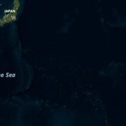
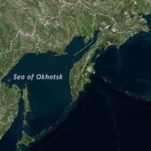
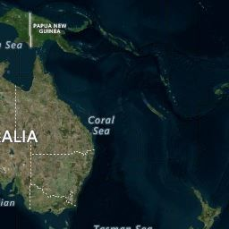
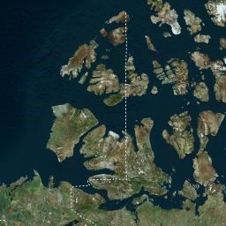
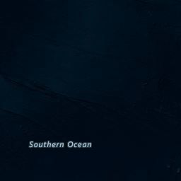
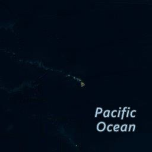
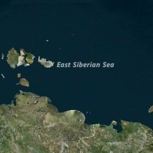
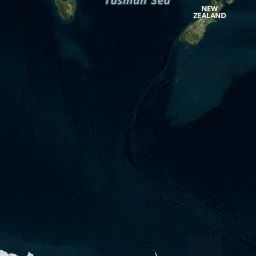
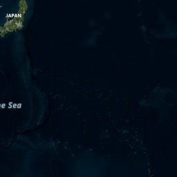
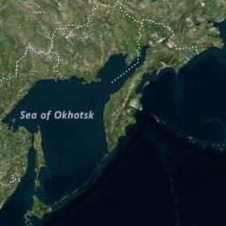
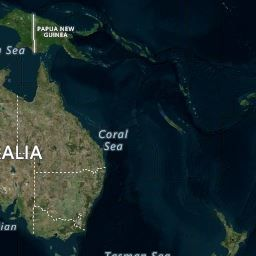
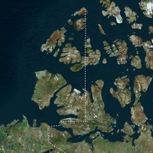
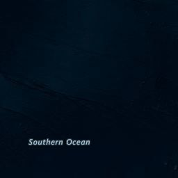
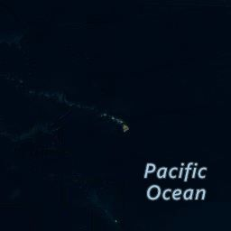
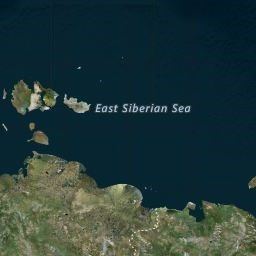
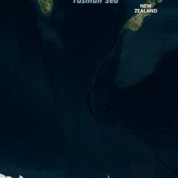

 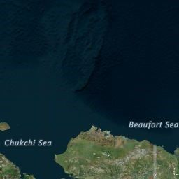
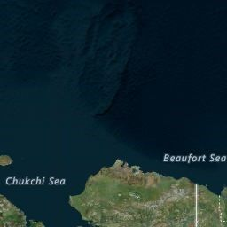